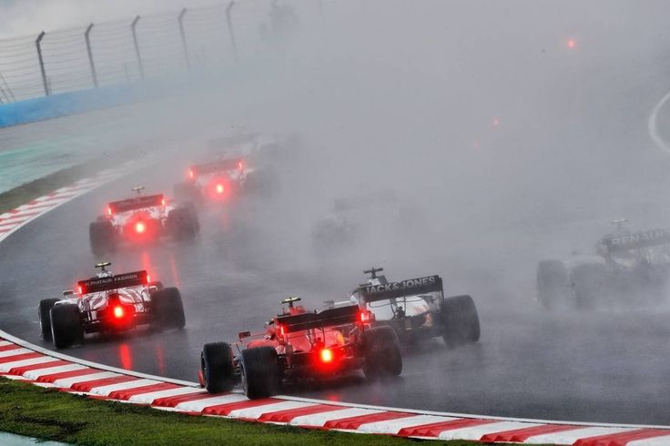

UNDER PRESSURE

Gomas heladas tras 1.9 km
A 10°C de ambiente y 12°C de pista, el neumático se enfría en la recta y patina al frenar en C14, arrancando virutas de caucho superficial.
COMPORTAMIENTO TÉRMICO EN FRÍO
diferencial de rendimiento con asfalto helado (<20°C) frente a condiciones estándar.

La ventaja térmica de McLaren
El chasis del MCL38 genera carga térmica progresiva sin quemar el núcleo. En el frío nocturno del desierto, Norris y Piastri cuentan con la mejor ventana para evitar el graining.
QUIÉN GANA Y PIERDE EN FRÍO
delta neto de posiciones ganadas en asfalto frío frente a pistas calientes.

20 segundos a fondo continuo
Las alas ultra-planas estilo Monza permiten volar a 350 km/h, pero enfrían frenos y gomas delanteras antes de la curva 14.
SAFETY CAR: 76.5% HISTÓRICO
muros de hormigón a centímetros y frenadas con goma subenfriada garantizan neutralizaciones.

Colapinto y la gestión del Duro
Superar el graining en las primeras 8 vueltas y estirar el neumático Duro permite aprovechar paradas bajo auto de seguridad para saltar a zona de puntos.